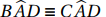
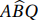
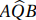
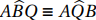
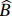
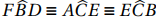
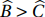

3.2 Bissetriz
Nesta seção, o conceito de bissetriz estende-se à bisseção de um ângulo formado entre duas retas, sejam elas as que contém os lados de um triângulo.
Dados os segmentos AB e AC, são bissetrizes dos ângulos entre as retas  e
e  os conjuntos de todos os pontos R equidistantes destas retas. Esses conjuntos de pontos constituem duas retas que passam pelo ponto A e divide o ângulo entre as retas e em dois setores de mesma abertura.
os conjuntos de todos os pontos R equidistantes destas retas. Esses conjuntos de pontos constituem duas retas que passam pelo ponto A e divide o ângulo entre as retas e em dois setores de mesma abertura.
Dado um triângulo ΔABC, cada um dos vértices possui exatamente duas bissetrizes, perpendiculares entre si.
Seja α o ângulo interno de um vértice do triângulo e seja β o ângulo externo do mesmo vértice. Sabe-se que $$\alpha + \beta = 180^\circ.$$
Traçando as bissetrizes deste ângulo tem-se: $$2 \times \frac{\alpha}{2} + 2 \times \frac{\beta}{2} = 180^\circ.$$ Daí, $$\frac{\alpha}{2} + \frac{\beta}{2} = 90^\circ.$$
Considere o vértice A e as retas e que contém os lados AB e AC, respectivamente. A bissetriz localizada entre estes lados é chamada de Bissetriz Interna, enquanto a outra é chamada de Bissetriz Externa.
Em um triângulo, a bissetriz de um ângulo interno divide o lado oposto em partes proporcionais aos lados adjacentes.
Dado o triângulo abaixo, considerando o vértice A e sua bissetriz interna AD, o teorema diz que: $$\frac{BD}{DC} = \frac{AB}{AC}.$$
Para demonstrar este teorema, tomemos um prolongamento do lado AC, neste sentido, até o ponto P, tal que PB seja paralelo à bissetriz AD:
Observe que  pois AD é bissetriz. Além disso, pois são ângulos alternos internos e pois são ângulos correspondentes entre duas retas paralelas e uma transversal. Logo e conclui-se que PA = AB. Aplicando o Teorema Fundamental de Proporcionalidade (2.17), tem-se: $$\frac{BD}{DC} = \frac{PA}{AC},$$ mas PA = AB, portanto $$\frac{BD}{DC} = \frac{AB}{AC}.$$
Em um triângulo, a bissetriz de um ângulo externo divide o lado oposto em partes proporcionais aos lados adjacentes.
Seja o triângulo ΔABC e AD é bissetriz externa do vértice A, sendo que o ponto D está no prolongamento do lado BC que é oposto ao vértice A, como mostrado abaixo. O teorema diz que $$\frac{DC}{DB} = \frac{AC}{AB}.$$
Seja Q um ponto no segmento AC tal que BQ é paralelo à bissetriz AD (veja figura 3.8). Os ângulos e  são congruentes pois são ângulos alternos internos. O ângulo formado pelo prolongamento do lado CA, neste sentido, com a bissetriz AD é congruente ao ângulo  pois são ângulos correspondentes nas paralelas AD e BQ. Porém, o mesmo ângulo formado pelo prolongamento do lado CA com a bissetriz AD é também congruente ao ângulo pois AD é bissetriz externa. Logo  e AQ = AB.
Pelo Teorema Fundamental de Proporcionalidade (2.17), $$\frac{DC}{DB} = \frac{AC}{AQ},$$ portanto $$\frac{DC}{DB} = \frac{AC}{AB}.$$
Dado um triângulo, o ângulo formado por duas bissetrizes internas (externas) é igual ao ângulo reto somado à metade (menos a metade) do terceiro ângulo no triângulo.
Em um triângulo ΔABC seja α o ângulo formado por duas bissetrizes internas e seja β o terceiro ângulo, conforme a figura 3.9 (esquerda).
Basta tomar $$\alpha = 180^\circ - \frac{1}{2}med(B) - \frac{1}{2}med(C) \text{ e usar } med(B) + med(C) = 180^\circ - \beta.$$
Em um triângulo ΔABC seja α o ângulo formado por duas bissetrizes externas e seja β o terceiro ângulo, conforme a figura 3.9 (direita).
Basta observar que $$\alpha = 180^\circ - \Big(90^\circ - \frac{med(B)}{2}\Big) - \Big(90^\circ - \frac{med(C)}{2}\Big).$$
O pé da perpendicular de um vértice de um triângulo sobre a bissetriz interna de um segundo vértice localiza-se no lado do triângulo medial, oposto ao primeiro vértice considerado.
Se P é o pé da perpendicular do vértice A sobre a bissetriz CP (Figura \ref{teorema112b}) emitida a partir do vértice C, e Q é a interseção de AP com o lado BC, os dois triângulos retângulos $\triangle APC$, $\triangle QPC$ são congruentes (caso ALA) e o ponto P é ponto médio de AQ. Uma vez que $\overline{M_cP}$ é base média do triângulo $\triangle ABQ$ e é, portanto, paralelo à BQ, temos que P está na base média $\overline{M_{c}M_{b}}$ do triângulo ΔABC.
Tomando um dos vértices do triângulo, e tomando as bissetrizes internas e as bissetrizes externas dos outros dois ângulos, os pés das quatro perpendiculares do primeiro vértice sobre as quatro bissetrizes dos outros dois ângulos são colineares.

Pelo Teorema 3.11 os pontos E e F estão na base média paralela ao lado BC. Note que o segmento BF é bissetriz interna do vértice B e o segmento BD é bissetriz externa. Logo, pelo Lema 3.7, são perpendiculares. Temos que DA é perpendicular a BD e AF é perpendicular a BF, logo AF é paralelo a BD e BF é paralelo a DA. O quadrilátero AFBD é um retângulo de diagonais AB e DF. Como DF divide AB em seu ponto médio e F está na base média referente ao lado BC, então D também está na base média. Analogamente EG está na mesma base média, portanto, D, E, F e G são colineares.
Em um triângulo, o maior entre dois ângulos tem a bissetriz interna de menor medida.
Em um triângulo ΔABC, seja o ângulo  maior que o ângulo e seja BD e CE as bissetrizes internas destes ângulos.
No segmento AD tomemos o ponto F tal que , isto é possível pois . Sejam H e G as interseções dos segmentos BD e BF com a bissetriz CE. Os dois triângulos ΔFBD e ΔFGC são semelhantes, pois eles são equiangulares, note que eles compartilham o ângulo . Assim,
$$ \begin{equation} \frac{BF}{CF} = \frac{BD}{CG} \hspace{10 cm} (3.1) \end{equation} $$
Agora, o triângulo ΔBFC ainda tem um ângulo menor no vértice C do que tem em B; assim BF < CF, e entretanto, pela equação (3.1), temos BD < CG < CE e, portanto, BD é a bissetriz de medida menor.
Se duas bissetrizes internas de um triângulo são de mesma medida, o triângulo é isósceles.
De fato, pelo Teorema 3.15, se entre dois ângulos internos de um triângulo não há o maior, então não pode haver a bissetriz de medida mais curta.